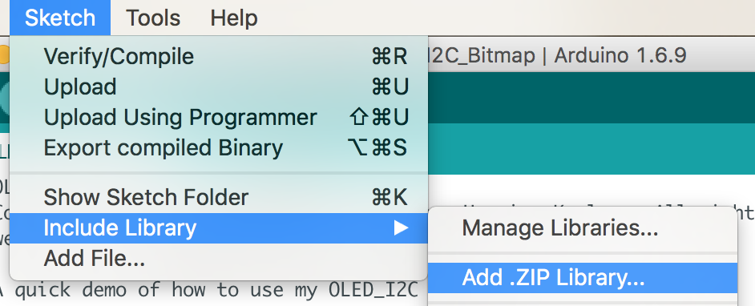

The Kidspeak software had a pre-requesite of the `Arduino` IDE, an `I2C OLED` Arduino Library, `NodeJS` and the `Kidspeak software` itself.
A week before Leetspeak 2016, I discovered a bug in the Arduino IDE, so on the day of the event I was using an older version which I knew worked.
First you need to install Arduino 1.6.9.
Next you will need Winchiphead signed drivers for CH340-CH341.
Download the OLED I2C Arduino library and install it.

Finally, you need the Kidspeak software.